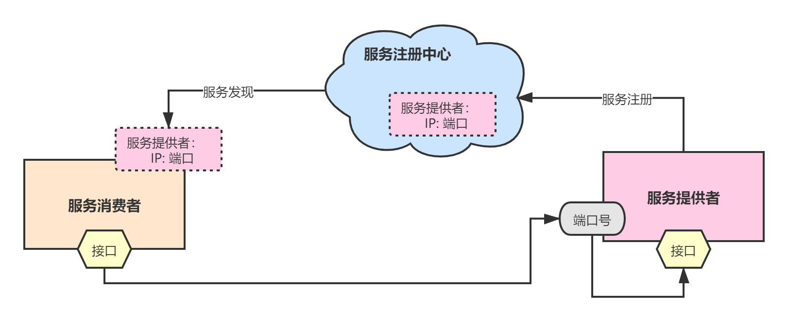
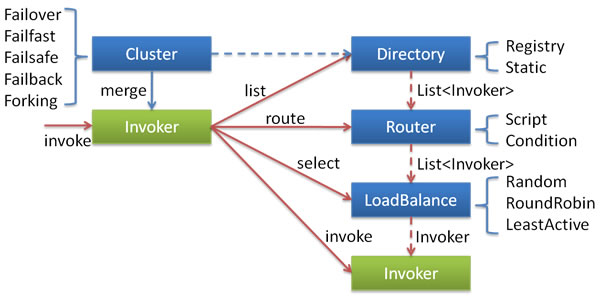

分布式进阶（十七）——分布式框架之可扩展：Dubbo基本原理
从本章开始，我将介绍分布式系统中与可扩展这一特性息息相关的一些开源框架的基本架构和核心原理。本章，我们先来看下Dubbo这个分布式RPC框架。
在分布式理论系列中，我已经讲过了服务化拆分，读者可以先去回顾一下。目前，业界最常用的开源RPC通信框架有Dubbo和Thrift。读者在阅读本章的过程中可以参考Dubbo官方文档：http://dubbo.apache.org/zh-cn/docs/user/quick-start.html。
一、基本架构
我们先来看看Dubbo的基本架构：

在使用dubbo的过程中，与客户端直接交互的有以下五类节点：
| 节点 | 角色说明 |
|---|---|
Provider |
服务提供方 |
Consumer |
服务消费方 |
Registry |
服务注册与发现的注册中心 |
Monitor |
统计服务的调用次数和调用时间的监控中心 |
Container |
服务运行容器 |
1.1 框架使用流程
Dubbo框架的使用流程大致如下：
- 服务容器负责启动、加载、运行服务提供者；
- 服务提供者在启动时，向注册中心注册自己提供的服务；
- 服务消费者在启动时，向注册中心订阅自己所需的服务；
- 注册中心将服务提供者的地址列表返回给消费者，如果有变更，注册中心将基于长连接推送变更数据给消费者；
- 服务消费者，从提供者地址列表中，基于软负载均衡算法，选一个服务提供者进行调用，如果调用失败，再选另一个调用；
- 服务消费者和提供者，在内存中累计调用次数和调用时间，每分钟发送一次统计数据到监控中心。
1.2 服务调用流程
下图是Dubbo服务调用过程的抽象，我们以一次Dubbo请求来看下基本的流程：

- 首先，服务消费者通过代理对象 Proxy 发起远程调用；
- 接着通过网络客户端 Client 将编码后的请求发送给服务提供方的网络层上，也就是 Server；
- Server 在收到请求后，首先要做的事情是对数据包进行解码，然后将解码后的请求发送至分发器 Dispatcher；
- 分发器将请求派发到指定的线程池上，由线程池调用具体的服务。
读者可以先对一次服务调用的流程有个初步印象，后面我将细化分析底层的原理。
二、底层原理
在开始分析dubbo的底层原理之前，先看下dubbo官网的这张图：

- 图中左边淡蓝背景的，为服务消费方使用的核心接口；右边淡绿色背景的，为服务提供方使用的核心接口；位于中轴线上的，为双方都用到的接口。
- 图中从下至上分为十层，各层均为单向依赖；右边的黑色箭头，代表层之间的依赖关系，每一层都可以剥离上层被复用；其中Service 和 Config 层为 API，其它各层均为 SPI（什么是SPI？参考下一章）。
- 图中的绿色小块，表示接口，蓝色小块表示实现类，图中只显示用于关联各层的实现类。
- 图中的蓝色虚线，为初始化过程，即启动时组装链；红色实线，为方法调用过程，即运行时调时链；紫色三角箭头为继承，可以把子类看作父类的同一个节点，线上的文字为调用的方法。
可以看到，dubbo是一种典型的分层架构，各层的主要功能如下：
- config 配置层：对外配置接口，以
ServiceConfig和ReferenceConfig为中心，可以直接初始化配置类，也可以通过 spring 解析配置文件来生成配置类。 - proxy 服务代理层：服务接口透明代理，生成服务提供者的客户端 Stub 和服务器端 Skeleton, 以
ServiceProxy为中心，扩展接口为ProxyFactory。 - registry 注册中心层：封装服务注册与服务发现功能，以服务 URL 为中心，扩展接口为
RegistryFactory,Registry,RegistryService。 - cluster 路由层：为多个服务提供者封装路由及负载均衡，并桥接注册中心，以
Invoker为中心，扩展接口为Cluster,Directory,Router,LoadBalance。 - monitor 监控层：RPC 调用次数和调用时间监控，以
Statistics为中心，扩展接口为MonitorFactory,Monitor,MonitorService。 - protocol 远程调用层：封装 RPC 调用，以
Invocation,Result为中心，扩展接口为Protocol,Invoker,Exporter。 - exchange 信息交换层：封装请求响应模式，同步转异步，以
Request,Response为中心，扩展接口为Exchanger,ExchangeChannel,ExchangeClient,ExchangeServer。 - transport 网络传输层：抽象 mina 和 netty 为统一接口，以
Message为中心，扩展接口为Channel,Transporter,Client,Server,Codec。 - serialize 数据序列化层：可复用的一些工具，扩展接口为
Serialization,ObjectInput,ObjectOutput,ThreadPool。
我知道，很多读者看到这里基本已经晕了，没关系，我会通过一次dubbo请求调用，来分析下dubbo的整个工作流程，逐一剖析各层的作用：

2.1 服务注册/发现
首先，dubbo要正常运行，需要包含三个最基本的组件：
- 服务提供者
- 服务消费者
- 注册中心
服务提供者，向注册中心注册自身的服务地址和端口，这一过程叫做服务注册。
服务消费者，从注册中心拉取一份服务提供者的列表，保存在本地，这一个过程叫做服务发现。

服务提供者和服务消费者就是service层，注册中心就是registry层。
2.2 接口代理
服务消费者并不是直接去调用服务提供者的接口，proxy服务代理层会为接口自动生成代理对象。该代理对象会通过cluster路由层根据软负载均衡算法，选择合适的服务提供者。
集群
Dubbo 在Cluster路由层定义了集群接口 Cluster 以及 Cluster Invoker。集群 Cluster 是将多个服务提供者合并为一个 Cluster Invoker，并将这个 Invoker 暴露给服务消费者。这样一来，消费者只需通过这个 Invoker 进行远程调用即可，至于具体调用哪个服务提供者，以及调用失败后如何处理等问题，都交给集群模块去处理。
所以，集群模块可以看成服务提供者（Provider）和服务消费者（Consumer）的中间层，为消费者屏蔽了服务提供者的情况，这样消费者就可以专心处理远程调用相关事宜，比如发请求，接受服务提供者返回的数据等，这就是集群模块的作用。

Cluster路由层的所有组件见上图，包含 Cluster、Cluster Invoker、Directory、Router 和 LoadBalance 等。 其工作过程可分为两个阶段：
- 在服务消费者初始化期间，集群 Cluster 实现类为消费者创建 Cluster Invoker 实例，即上图中的 merge 操作；
- 在服务消费者进行远程调用时，以 FailoverClusterInvoker 为例，该类型 Cluster Invoker 首先会调用 Directory（Directory 的用途是保存 Invoker） 的 list 方法列举 Invoker 列表（可将 Invoker 简单理解为服务提供者），当 FailoverClusterInvoker 拿到 Directory 返回的 Invoker 列表后，通过 LoadBalance 从列表中选择一个 Invoker。最后 FailoverClusterInvoker 会将参数传给选出的 Invoker 实例的 invoker 方法，进行真正的远程调用。
集群容错策略
对于服务消费者来说，同一环境下可能有多个服务提供者，消费者需要决定当某个服务调用失败时该如何处理，是重试，还是抛出异常，亦或是只打印异常等。这种处理措施，就是集群容错策略。
Dubbo 根据容错策略提供了多种集群实现：
- Failover Cluster：失败自动切换，自动重试其他机器，默认就是这个，常见于读操作
- Failfast Cluster：快速失败，一次调用失败就立即失败，常见于写操作
- Failsafe Cluster：失败安全，出现异常时忽略掉，常用于不重要的接口调用，比如记录日志
- Failback Cluster：失败自动恢复，失败了后台自动记录请求，然后定时重发，比较适合于写消息队列这种
- Forking Cluster：并行调用多个服务提供者，并行调用多个provider，只要一个成功就立即返回
- Broadcacst Cluster：逐个调用所有的provider
负载均衡
Cluster路由层包括一个LoadBalance组件，主要用作出现多个服务提供者时的客户端负载均衡，具体的负载均衡算法，后续小节专门讲解。
2.3 协议选择
代理对象创建完成后，还需要进行请求协议的选择，Dubbo支持dubbo、rmi、hessian、http等协议，protocol层会根据配置完成协议的选择。
2.4 封装请求
接着，Exchange信息交换层会对请求进行封装，最终会将请求封装成Dubbo的Request对象。
2.5 网络通信
真正发起请求是在 Transport 网络传输层，该层其实就是一个基于netty/mina实现的Server：
以Netty为例，Netty底层采用了I/O 多路复用模型，基本通信原理如下：
- 首先，服务提供者端，Netty会有一个Acceptor线程，通过
selector这个多路复用函数去轮询监听Server Socket——ServerSocketChannel 的各种网络事件； - 服务消费者端，如果发起建立连接请求，被Acceptor线程监听到后，会在Server端自动生成对应的SocketChannel；
- 服务端的Processor线程会去轮询SocketChannel，查看对应的消费者有没有发生请求过来，如果有请求，则解析出来交给服务提供者处理；
- 服务消费者端，对于响应的处理也一样，会有一个工作线程去轮询客户端的SocketChannel，解析后交给消费者处理。
2.6 序列化
网络数据均以二进制进行传输，所以需要对请求的数据进行序列化，序列化的工作在Serialize数据序列化层完成。
2.7 接受请求
服务提供者，接收请求时，也是靠的transport 网络传输层，首先进行反序列化，然后解析出Request，按照协议格式再次解析，交给动态代理对象处理。
三、通信协议
上一节中，我们提到Protocol 协议层负责通信协议的选择，本节来看下Dubbo提供了哪些协议。
3.1 dubbo
dubbo缺省协议，采用单一长连接和NIO异步通讯，适合于小数据量大并发的服务调用，以及服务消费者机器数远大于服务提供者机器数的情况。不适合传送大数据量的服务，比如传文件，传视频等，除非请求量很低。
思考一下为什么 dubbo:// 适合高并发小数据量的场景？
在大多数场景下，服务的现状都是服务提供者少、服务消费者多，一个服务提供者通常可以满足20个左右服务消费者的并发调用 。
如果每天调用量为亿量级，那长连接是最合适的，因为此时每个服务消费者维持一个长连接就可以，可能总共就100个连接，然后直接基于长连接NIO异步通信，就可以支撑高并发请求。否则，如果上亿次请求每次都是短连接的话，相当于每个请求都要建立一次连接，系统开销会非常大。
另一方面，由于是单一长连接，所以传输数据量太大的话，会导致并发能力降低（数据量大可能导致网络阻塞）。
缺省协议，使用基于mina1.1.7+hessian3.2.1的tbremoting交互。
连接个数：单连接
连接方式：长连接
传输协议：TCP
传输方式：NIO异步传输
序列化：Hessian二进制序列化
适用范围：传入传出参数数据包较小（建议小于100K），消费者比提供者个数多，单一消费者无法压满提供者，尽量不要用dubbo协议传输大文件或超大字符串
适用场景：常规远程服务方法调用
3.2 hessian
Hessian协议用于集成Hessian的服务，Hessian底层采用Http通讯，采用Servlet暴露服务，Dubbo缺省内嵌Jetty作为服务器实现基于Hessian的远程调用协议。
连接个数：多连接
连接方式：短连接
传输协议：HTTP
传输方式：同步传输
序列化：Hessian二进制序列化
适用范围：传入传出参数数据包较大，提供者比消费者个数多，提供者压力较大，可传文件
适用场景：页面传输，文件传输，或与原生hessian服务互操作
3.3 http
采用Spring的HttpInvoker实现。
连接个数：多连接
连接方式：短连接
传输协议：HTTP
传输方式：同步传输
序列化：表单序列化（JSON）
适用范围：传入传出参数数据包大小混合，提供者比消费者个数多，可用浏览器查看，可用表单或URL传入参数，暂不支持传文件
适用场景：需同时给应用程序和浏览器JS使用的服务
3.4 rmi
RMI协议采用 JDK 标准的java.rmi.*实现，采用阻塞式短连接和JDK标准序列化方式。
连接个数：多连接
连接方式：短连接
传输协议：TCP
传输方式：同步传输
序列化：Java标准二进制序列化
适用范围：传入传出参数数据包大小混合，消费者与提供者个数差不多，可传文件
适用场景：常规远程服务方法调用，与原生RMI服务互操作
3.5 webservice
基于WebService的远程调用协议 。
连接个数：多连接
连接方式：短连接
传输协议：HTTP
传输方式：同步传输
序列化：SOAP文本序列化
适用场景：系统集成，跨语言调用
3.6 thrift
Thrift是一个轻量级、跨语言的远程服务调用框架，最初由Facebook开发，后面进入Apache开源项目。它通过自身的IDL中间语言, 并借助代码生成引擎生成各种主流语言的RPC服务端/客户端模板代码。
当前 dubbo 支持的 thrift 协议是对 thrift 原生协议的扩展，在原生协议的基础上添加了一些额外的头信息，比如service name，magic number等。
四、负载均衡
关于负载均衡，我已经在基础篇里介绍过了，本节主要来看下Dubbo中的负载均衡。Dubbo的负载均衡是Cluster 路由层提供的功能之一。
Dubbo 需要对Consumer的调用请求进行分配，避免少数Provider负载过大。 Dubbo采用的负载均衡属于软负载均衡中的进程内负载均衡。
所谓进程内负载均衡，指服务消费者自己根据服务提供者的地址列表，选择其中一个发起调用，如果调用失败，再选另一台调用。
Dubbo 提供了4种负载均衡算法实现：
- RandomLoadBalance：基于权重的随机算法；
- LeastActiveLoadBalance：基于最少活跃调用数算法；
- ConsistentHashLoadBalance：基于一致性 hash 算法；
- RoundRobinLoadBalance：基于加权轮询算法。
4.1 Random Load Balance
默认情况下，dubbo是使用random load balance算法，可以对provider不同实例设置不同的权重，会按照权重来负载均衡，权重越大分配流量越高，一般就用这个默认的就可以了。
4.2 Roundrobin Load Balance
该算法就是简单的轮询，但是如果各个机器的性能不一样，容易导致性能差的机器负载过高。所以此时需要调整权重，让性能差的机器承载权重小一些，流量少一些。
4.3 Leastactive Load Balance
这个就是自动感知算法，如果某台机器性能很差，那么接收的请求就越少，越不活跃，此时就会给该机器分配更少的调用请求。
4.4 Consistant Hash Load Balance
一致性Hash算法，相同key的请求一定分发到同一个provider上去，provider挂掉的时候，会基于虚拟节点均匀分配剩余的流量，抖动不会太大。如果你需要将一类请求映射到同一个Provider，那就用这个算法。
五、总结
本章，我介绍了Dubbo这一分布式RPC框架的基本架构和底层原理。